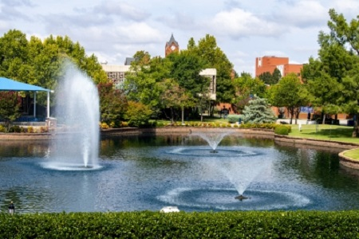
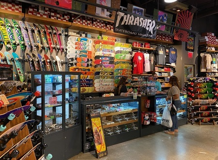
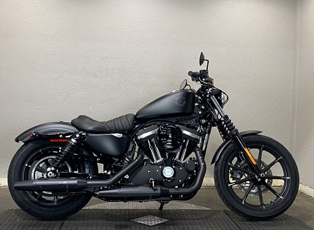

Education
I am a new developer just starting out, however I have studied at several different colleges while moving around the south:
- University of Central Oklahoma (UCO)
- Odessa College
- Pearl River Community College
Work Experience
I have been working for about 9 years now , mostly in retail. However, it's taught me many useful skills:
- Management of a team
- Sales
- Working in high stress situations
Personal Interests
Without going into too much detail, here is some information about me peronally, as well as things I enjoy:
- My favorite pastime is playing video games
- I ride a motorcycle, and have done so for about two years now.
- I love metal music, it is definitley my favorite music genre
In depth info about Eli Galloway
In case you'd like to know more about any of the previous topics, I have elaborated on each here!
- Education
- Originally, I planned to be done with education after high school. However, I made a spontaneous decision to go back, and started my education at University of Central Oklahoma. Due to my dad having a position in the oil industry, we have had to move several times. Because of this, I continued my education at Odessa College in Texas, persuing a career as an I & E technician. This field turned out not to be for me, and so once I moved to Hattiesburg, Mississippi, I decided to pick up Information Technology and coding.
- Work Experience
- When it comes to work experience, I really only have retail experience. I was been working retial since I was 16, so I have about a decade worth of experience under my belt. I have dealt with it all, and have had a history in management, so I'm used to dealing with and directing other people towards a goal.
- Personal Interests
- I absolutley love video games, and am spending most of my time off playing them. It's always been my favorite pastime. A new hobby I've gotten into recenty is motorcycles, ever since I bought one about two years ago. I love taking it out on the weekends with my dad and enjoying the nice weather, there is truly nothing on earth like it. I also love metal music and the alternative genre in general, and it has a rather large influence on my personality and how I like to present myself. I may not have what most would consider to be a "normal look", but I believe it just shows that I'm comfortable in my own skin.